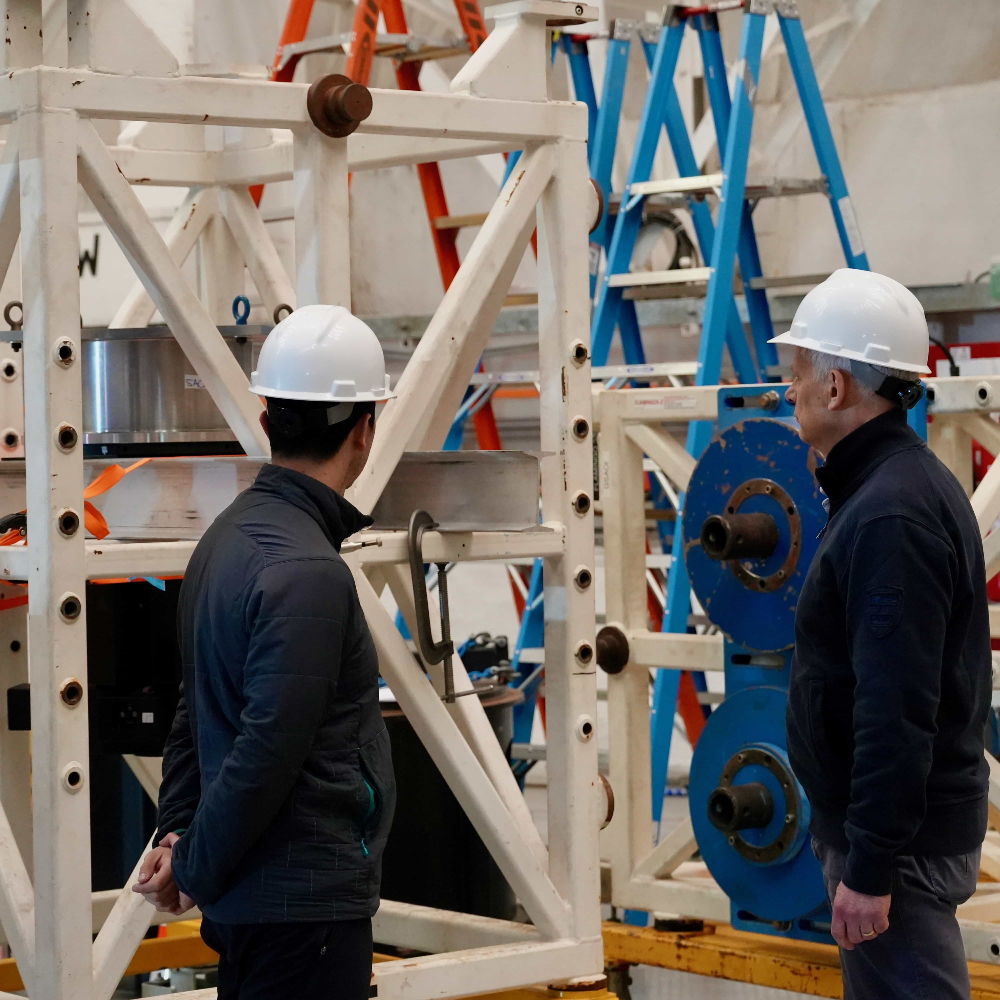

Galería
Telescopios y experiencias de nuestro equipo
Nuestros integrantes tienen experiencia en instrumentación astronómica y operaciones relacionadas desde el primer día. En esta galería de fotografías (todas tomadas por miembros de AstroLab) mostramos algunos de los lugares donde el equipo ha trabajado, colaborado o estado en los últimos años. Estos sitios están en Chile y en el extranjero, e incluye astronomía de longitudes de onda de radio largas, longitudes de onda milímetricas, telescopios ópticos y pruebas de sitio con nuestros instrumentos.")


 radio dish")
CHIME/FRB Outrigger at Green Bank Observatory
 CHIME/FRB Otrigger GBO. CHIME/FRB es un radio telescopio ubicado en British Columbia (BC) Canadá. CHIME/FRB ha estado construyendo telescopios más pequeños, llamados outriggers. Este es el caso del CHIME/FRB Outrigger ubicado en Green Bank (Green Bank Observatory; GBO), West Virginia, a más de 3000 km de BC. El outriggers, es un cilíndro de 20 m de diámetro con 256 elementos de antena de doble polarización (receptores de radio frecuencias de 400--800 MHz). Nuestro equipo colabora estrechamente con el equipo de CHIME/FRB, con un énfasis particular en los algoritmos de correlación y la detección de ráfagas rápidas de radio (del inglés FRB) en interferometría de muy larga base (very long baseline interferómetry; VLBI). Este tipo de observaciones son fundamentales para entender los orígenes cósmicos de estos eventos de duración en milisegundos. Además, su observación en VLBI es muy compleja, su posición en el cielo y duración hacen que observarlos simultáneamente con dos o más radiotelescopios sea un desafío instrumental. La colaboración CHIME/FRB ya ha podido utilizar esta misma técnica de interferometría a gran escala y ha realizado la primera localización al momento de detectar una FRB (Cassanelli, Leung, & Sanghavi et al. 2024). La fotografía fue tomada mientras Tomás estaba en el sitio ayudando con el despliegue de la cadena analógica y digital de la instrumentación en 2023.
CHIME/FRB Otrigger GBO. CHIME/FRB es un radio telescopio ubicado en British Columbia (BC) Canadá. CHIME/FRB ha estado construyendo telescopios más pequeños, llamados outriggers. Este es el caso del CHIME/FRB Outrigger ubicado en Green Bank (Green Bank Observatory; GBO), West Virginia, a más de 3000 km de BC. El outriggers, es un cilíndro de 20 m de diámetro con 256 elementos de antena de doble polarización (receptores de radio frecuencias de 400--800 MHz). Nuestro equipo colabora estrechamente con el equipo de CHIME/FRB, con un énfasis particular en los algoritmos de correlación y la detección de ráfagas rápidas de radio (del inglés FRB) en interferometría de muy larga base (very long baseline interferómetry; VLBI). Este tipo de observaciones son fundamentales para entender los orígenes cósmicos de estos eventos de duración en milisegundos. Además, su observación en VLBI es muy compleja, su posición en el cielo y duración hacen que observarlos simultáneamente con dos o más radiotelescopios sea un desafío instrumental. La colaboración CHIME/FRB ya ha podido utilizar esta misma técnica de interferometría a gran escala y ha realizado la primera localización al momento de detectar una FRB (Cassanelli, Leung, & Sanghavi et al. 2024). La fotografía fue tomada mientras Tomás estaba en el sitio ayudando con el despliegue de la cadena analógica y digital de la instrumentación en 2023.
CHARTS. El radio telescopio Canadian-Chilean array for radio transient studies (CHARTS) será un interferómetro de 256 elementos ubicado en Laguna Carén (foto que muestra el sitio actual; Pudahuel). El sitio está aislado del público en lo profundo del parque y es capaz de albergar todo el equipo e instrumentación del arreglo (~20 m x 20 m). Nuestro equipo operará la instalación de forma completamente remota, minimizando el impacto en la reserva del parque, en un sistema automatizado para clasificar y detectar señales transitorias en longitudes de onda de radio largas (de 300--500 MHz). Además, el sitio cuenta con varios cerros que actúan como un escudo parcial contra la interferencia de radiofrecuencia (radio frequency interference RFI; que contaminan observaciones astronómicas). Esperamos comenzar a construir el arreglo en el sitio a partir de 2025. ¡Pronto actualizaremos con noticias y avances de CHARTS!
 Digitizer. Un digitalizador es un dispositivo electrónico capaz de transformar una señal analógica (como los antiguos cables coaxiales de televisión) en una señal digital (por ejemplo, un cable Ethernet). Los digitalizadores, como lo son los radio frequency system-on-chip (RFSoC) 4x2 de Xilinx AMD, son una pieza clave para cualquier instalación de radioastronomía. En particular, estas nuevas tecnologías son extremadamente flexibles, permitiéndonos programar el hardware a nuestra conveniencia. El software lo basamos en la comunidad cientídica de CASPER o la CASPER Collaboration con lo cual adaptaremos el software a nustro telescopio CHARTS. El desarrollo de hardware del digitalizador en RFSoC está siendo liderado por el estudiante Bruno.
Digitizer. Un digitalizador es un dispositivo electrónico capaz de transformar una señal analógica (como los antiguos cables coaxiales de televisión) en una señal digital (por ejemplo, un cable Ethernet). Los digitalizadores, como lo son los radio frequency system-on-chip (RFSoC) 4x2 de Xilinx AMD, son una pieza clave para cualquier instalación de radioastronomía. En particular, estas nuevas tecnologías son extremadamente flexibles, permitiéndonos programar el hardware a nuestra conveniencia. El software lo basamos en la comunidad cientídica de CASPER o la CASPER Collaboration con lo cual adaptaremos el software a nustro telescopio CHARTS. El desarrollo de hardware del digitalizador en RFSoC está siendo liderado por el estudiante Bruno.
 CHARTS Pathfinder Telescope. El telescopio pathfinder CHARTS o CPT es nuestro prototipo de radio antena en Cerro Calán. El plato de 3 m (fabricado por RF-HAMDESIGN) es un banco de pruebas para hardware y software para el próximo proyecto CHARTS. La antena se puede controlar completamente de forma remota, realizar observaciones de anchos de banda pequeños y monitorear frecuencias bajas de 300 MHz a 1 GHz. Nuestro plan es equipar completamente este plato de radio con componentes de CHARTS (como amplificación, antena y digitalización) y configurarlo para observar fuentes brillantes y locales como el púlsar Vela (J0835-4510). El CPT nos ayudará a validar aún más nuestro instrumento, realizar ciencia educativa y abrir el camino hacia una versión mejorada de CHARTS. Vicente es el ingeniero principal a cargo del CPT (recientemente graduado de ingeniería eléctrica).
CHARTS Pathfinder Telescope. El telescopio pathfinder CHARTS o CPT es nuestro prototipo de radio antena en Cerro Calán. El plato de 3 m (fabricado por RF-HAMDESIGN) es un banco de pruebas para hardware y software para el próximo proyecto CHARTS. La antena se puede controlar completamente de forma remota, realizar observaciones de anchos de banda pequeños y monitorear frecuencias bajas de 300 MHz a 1 GHz. Nuestro plan es equipar completamente este plato de radio con componentes de CHARTS (como amplificación, antena y digitalización) y configurarlo para observar fuentes brillantes y locales como el púlsar Vela (J0835-4510). El CPT nos ayudará a validar aún más nuestro instrumento, realizar ciencia educativa y abrir el camino hacia una versión mejorada de CHARTS. Vicente es el ingeniero principal a cargo del CPT (recientemente graduado de ingeniería eléctrica).
 IQUEYE en Gemini Sur. Este pasado Febrero 2025 nuestro equipo de AstroLab estuvo presente en Gemini Sur, Cerro Pachón, instalando el instrumento colaborativo Italian quantum eye (IQUEYE). La instalación y observaciones se llevaron a cabo durante una semana completa con la cual tendremos pronto publicaciones de los objetos más rapidos del Universo a longitudes de onda ópticas. En la fotografía se ve a Prof. Cassanelli y Naletto. A la izquierda de la figura el instrumento IQUEYE se encuentra dentro de la estructura metálica blanca.